Carnet : 5 choix · 23.11
Tour 12, en ligne. Pour chaque question : aujourd'hui (capture en ligne), puis 2 ou 3 variantes à 390 px, dessinées sur la vraie app (données du banc d'essai). Pointillé rose : ce qui change.
À choisir
- Q-1 · Quel prix pour un projet, une fois l'article choisi ? A recommandé
- Q-1b · « Prix estimé ? » : tes cinq pastilles, ou le budget en plus B recommandé
- Q-2 · Ce que la recherche des carnets fouille C recommandé
- Q-5 · Le carnet au repos : 40 mots au plus A recommandé
- Q-6 · « Commandé » dans un carnet choisi A recommandé
- Q-7 · « S44 – S49 » écrit deux fois déjà posée au Calendrier
Déjà tranché par toi, appliqué sans te redemander : texte du Carnet à 14 px au moins (ta règle du 16.11) ; la frise au doigt partout pour choisir une date (22.11 : « PARTOUT »).
Réponds en une ligne, par exemple « 1A 1bB 2C 5A 6A ». Un mélange se dit en mots (« 4B mais sans les puces au Carnet »).
Q-1 · Quel prix pour un projet, une fois l'article choisi ?
Exemple du test M1 : estimé 500 au carnet, puis l'article à 2 495,6 choisi. Aujourd'hui, trois chiffres vivent à la fois. Dessiné sur la carte À venir de « Frigo de garde » : estimé 500, choisi 4 900.
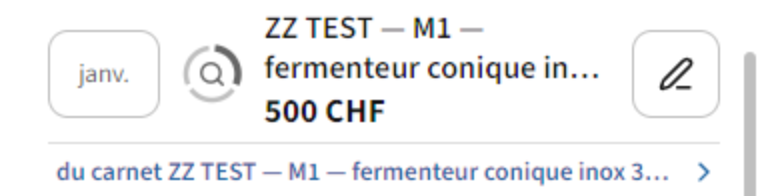
Le carnet choisi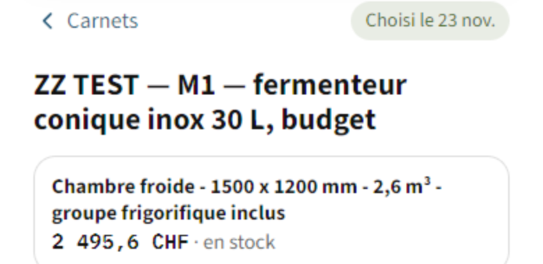
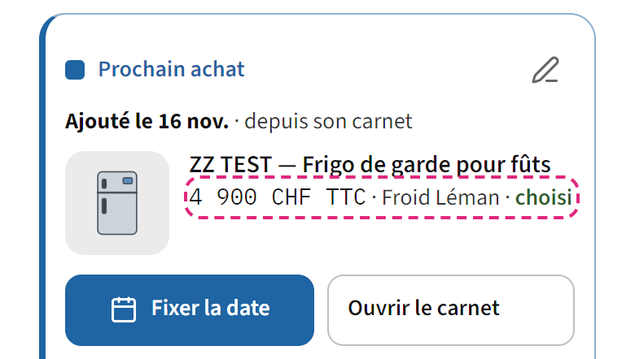
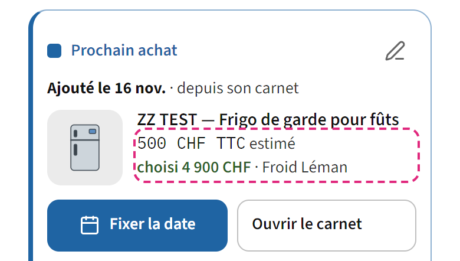
Q-1b · « Prix estimé ? » : tes cinq pastilles, ou le budget en plus
Carnet « Frigo + congel », critère « Budget du Planning : 400 CHF ». Les pastilles vont de 100 à 5 000 ; ni 400, ni le prix lu dans un lien.
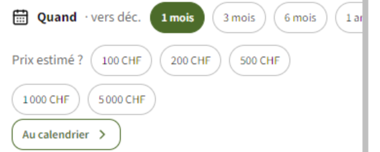
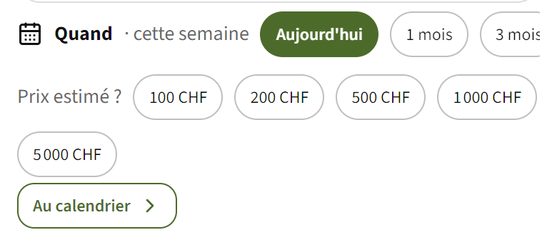
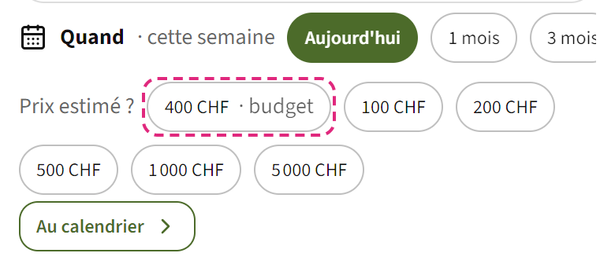
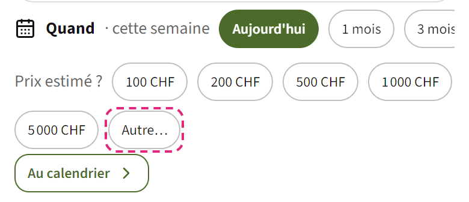
Q-2 · Ce que la recherche des carnets fouille
M1 : « évier » trouvait 1 carnet sur 4 ; « froide » ne trouvait pas le carnet qui avait une chambre froide parmi ses articles.
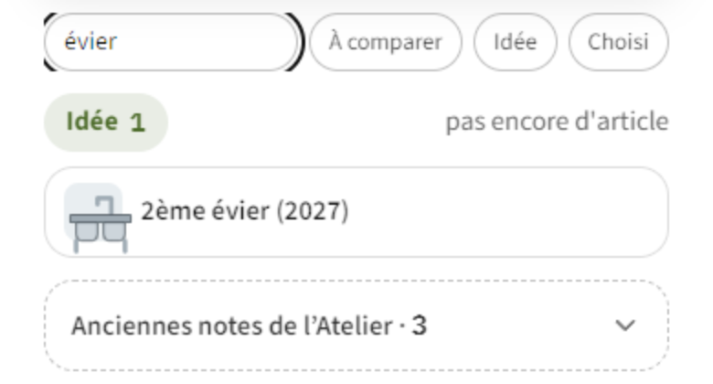
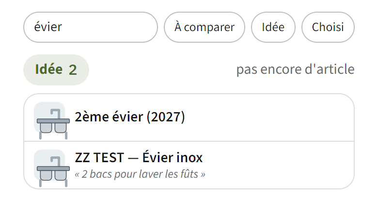
« froide »
 « froide »
« froide »
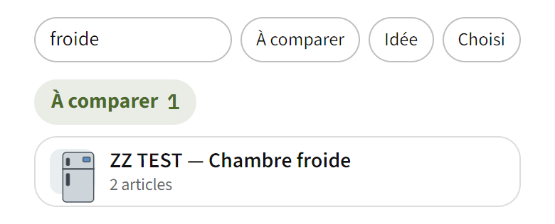
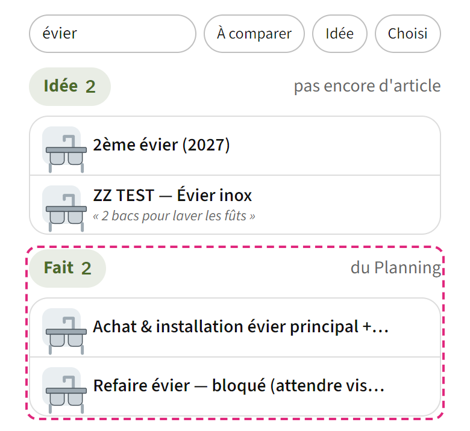
« froide »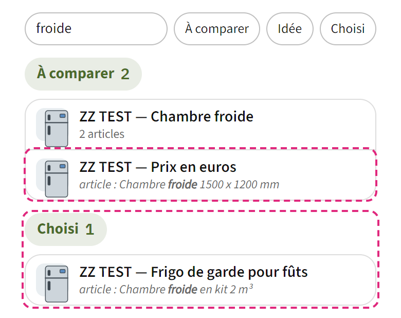
Q-5 · Le carnet au repos : 40 mots au plus
Ta règle du Carnet (16.11) : au plus 40 mots visibles au repos. Elle a été écrite pour les maquettes ; l'app y ajoute Quand, Prix estimé et Au calendrier. Carnet « Frigo + congel ».
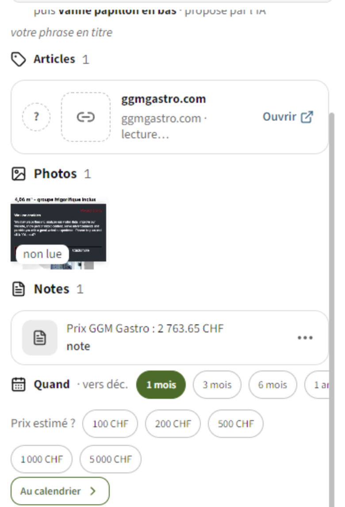
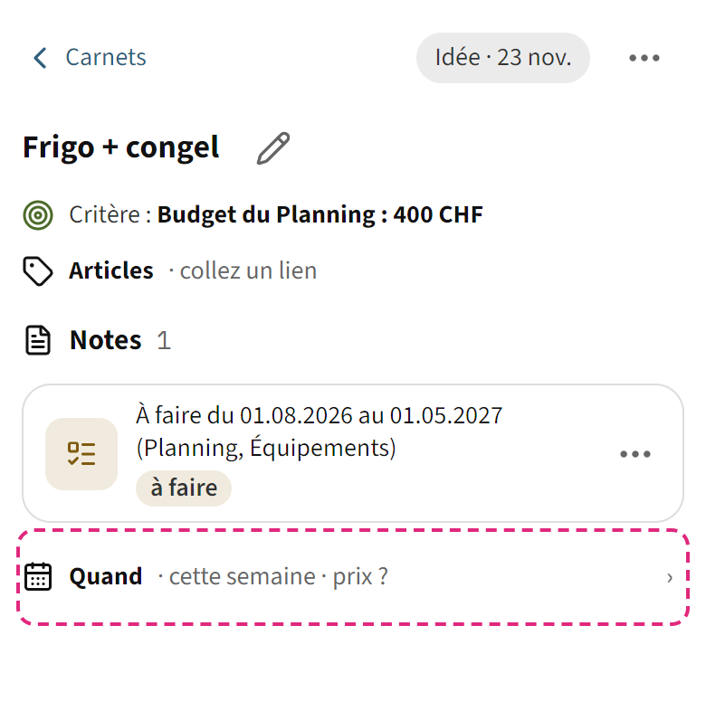
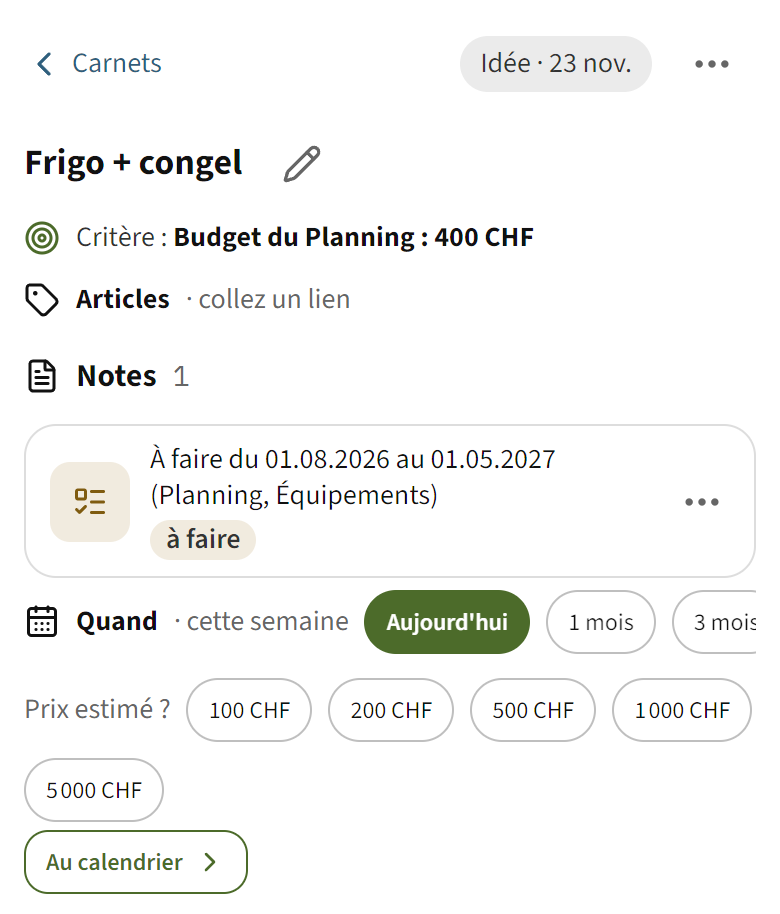
Q-6 · « Commandé » dans un carnet choisi
Aujourd'hui : Choisir, puis Placer (le projet va dans À venir). Rien ne dit « commandé le … » ni quand la livraison arrive.
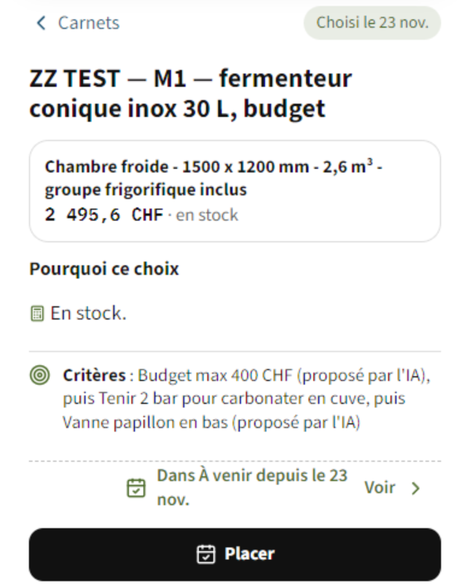
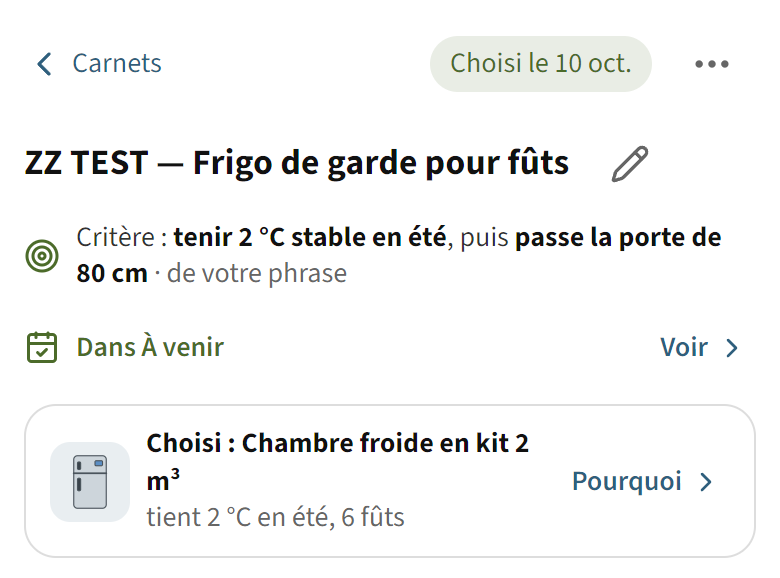
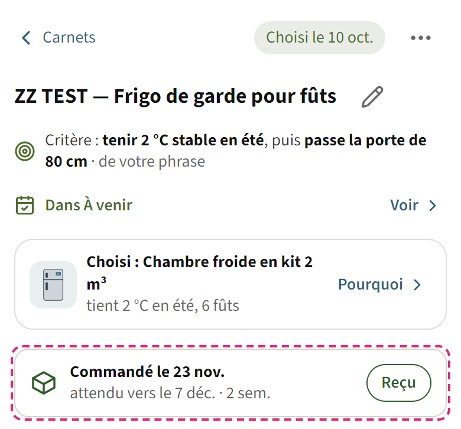
Q-7 · « S44 – S49 » sur le cadre, au-dessus des graduations
Déjà posée : Calendrier, Q-5, page du 23.11 (ouvrir). Ta réponse là-bas vaut pour le Carnet ; rien à choisir ici.
« Aujourd'hui » : captures en ligne du tour 12 (tests M1 et M4, contre-épreuve du Calendrier). Variantes : la vraie app sur les carnets d'essai (« ZZ TEST — … »), retouchée là où c'est entouré ; montants d'exemple. Source : LISTE.md § 5.